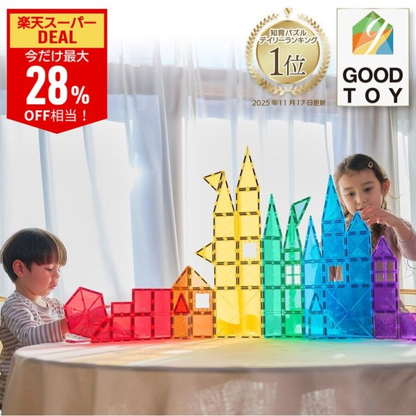
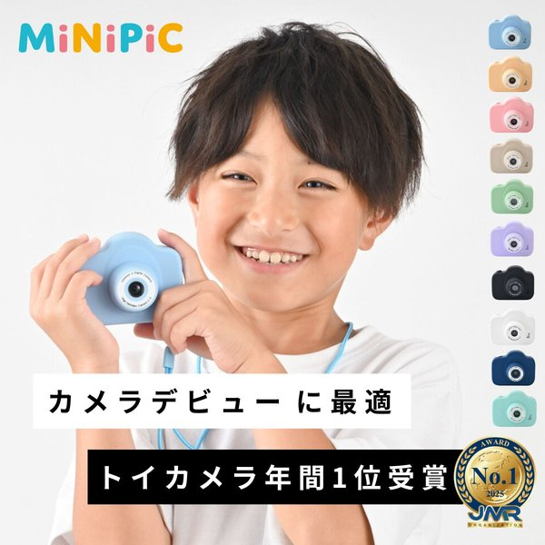
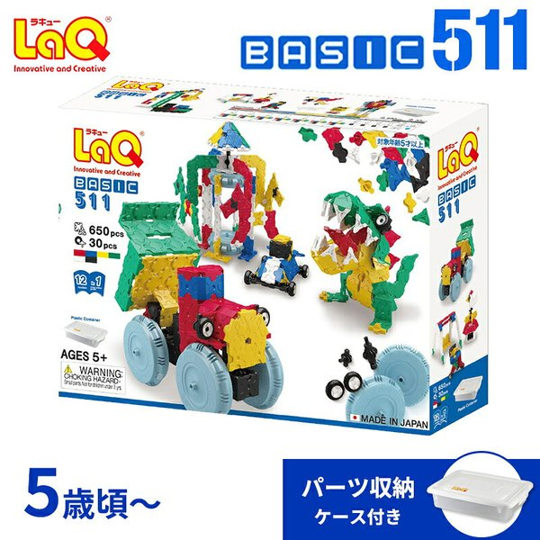
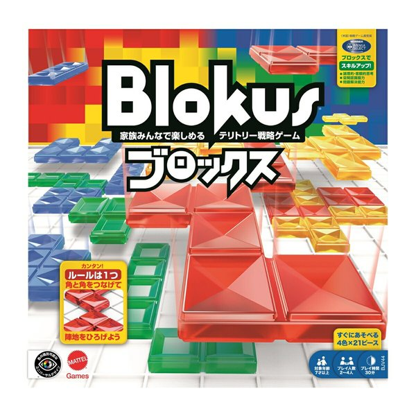
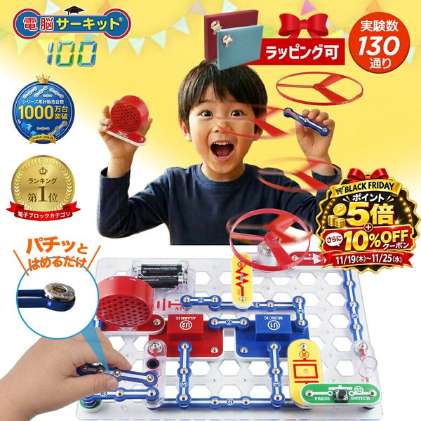
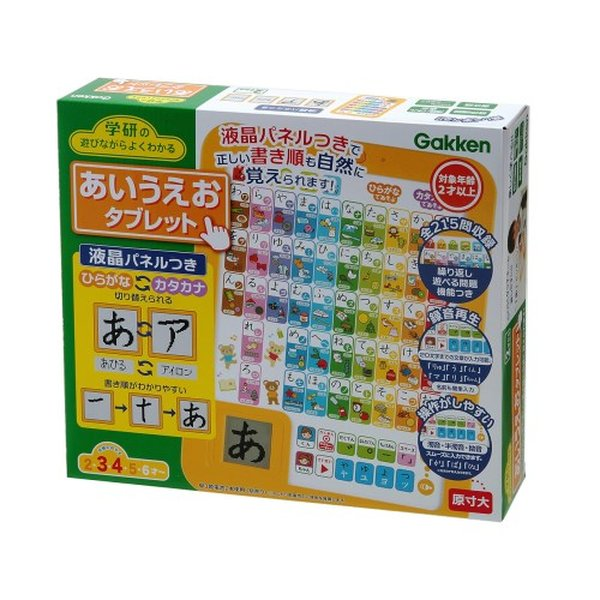
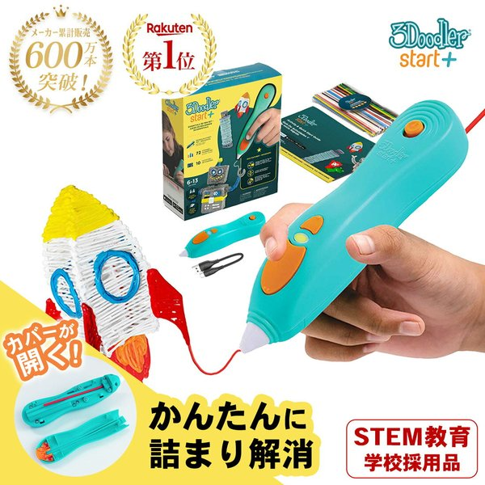
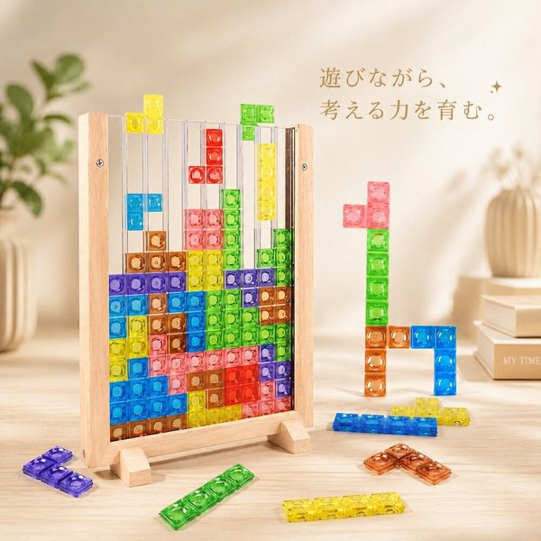
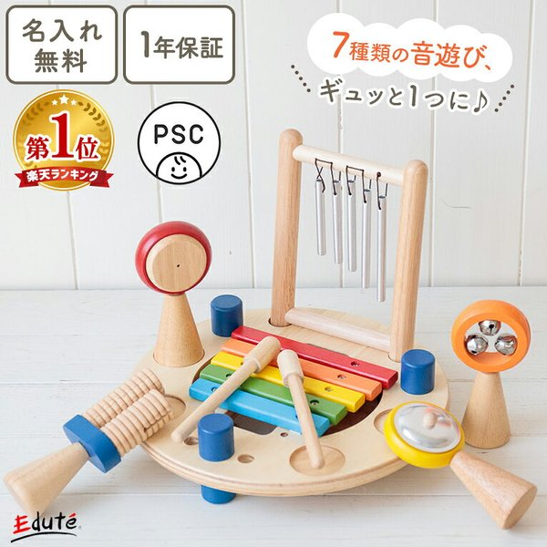

【2026年クリスマス】子どもが長く遊ぶプレゼント｜レゴ・マグネットブロック・キッズカメラ・ボードゲーム10選
クリスマスのプレゼントは、開けた瞬間の歓声より、1月になっても遊んでいるかどうかで、値段の分だけ働いたかが決まります。光って音が出るだけのものは数日で飽きられますが、組み立てたり、ルールを覚えたりする遊びは、年齢が上がっても遊び方が変わって長く残ります。
選ぶ軸は、対象年齢、一人でも遊べるか、そしてパーツを買い足せるかです。ブロック系は説明書の作例が終わっても、パーツを足せば作品が増えていきます。ボードゲームは家族で遊ぶ時間が増えるので、1人遊びが苦手な子ほど効きます。カメラやタブレットは、遊びながら文字や画面に触れられるので、就学前後の子に向いています。工作系は、作ったものが形として残るので、達成感が後から効いてきます。対象年齢は「今の年齢＋1歳上」を目安にすると、長く遊べます。
本記事では、楽天市場で人気・高評価の子ども向けクリスマスプレゼント＆知育玩具10選を、実売価格とレビュー評価つきで写真付き紹介します。
- おすすめ10選 スペック・特徴比較表
- BEST 1｜レゴ クラシック 黄色のアイデアボックス スペシャル 10698
- BEST 2｜マグビルド ベーシックセット 70ピース（マグネットブロック）
- BEST 3｜キッズカメラ ミニピク（SDカード付き・スマホ転送）
- BEST 4｜LaQ ベーシック 511（5歳〜・日本製）
- BEST 5｜ブロックス Blokus（2〜4人用・7歳〜）
- BEST 6｜電脳サーキット 100（ブロックで学ぶ電気の仕組み）
- BEST 7｜学研のあそびながらよくわかる あいうえおタブレット（2歳から）
- BEST 8｜3Doodler Start+ 3Dペン（6歳〜・STEM工作）
- BEST 9｜3Dテトリス パズル（木製・立体パズル）
- BEST 10｜メロディーゴーラウンド（木製楽器・名入れ無料）
- 【読者負担0円】買わなくても得する無料サービス
- まとめ：クリスマスプレゼントの知育玩具10選の選び方
| 順位 | 商品名 | ブランド | 最大の特徴・おすすめ理由 | 総合評価 |
|---|---|---|---|---|
| BEST 1 | レゴ クラシック 黄色のアイデアボックス スペシャル 10698 | レゴ（LEGO） | 基本ブロックがたっぷり入る | 4.73 |
| BEST 2 | マグビルド ベーシックセット 70ピース（マグネットブロック） | KitWell（キットウェル） | グッド・トイ受賞の定番 | 4.69 |
| BEST 3 | キッズカメラ ミニピク（SDカード付き・スマホ転送） | MiNiPiC（ミニピク） | スマホに転送して一緒に見られる | 4.55 |
| BEST 4 | LaQ ベーシック 511（5歳〜・日本製） | LaQ（ラキュー） | 5歳から平面・立体まで作れる | 4.77 |
| BEST 5 | ブロックス Blokus（2〜4人用・7歳〜） | マテルゲーム（Mattel） | 7歳から大人まで同じルールで遊べる | 4.76 |
| BEST 6 | 電脳サーキット 100（ブロックで学ぶ電気の仕組み） | 電脳サーキット | ブロックを組むだけで回路が完成 | 4.61 |
| BEST 7 | 学研のあそびながらよくわかる あいうえおタブレット（2歳から） | 学研ステイフル | 2歳から文字とことばに触れられる | 4.37 |
| BEST 8 | 3Doodler Start+ 3Dペン（6歳〜・STEM工作） | 3Doodler | 空中に描いて立体を作れる | 4.58 |
| BEST 9 | 3Dテトリス パズル（木製・立体パズル） | ハレゾラTBP | 立体に組む力がつく | 4.58 |
| BEST 10 | メロディーゴーラウンド（木製楽器・名入れ無料） | エデュテ（edute） | 1歳から叩いて音を出せる | 4.61 |
レゴ クラシック 黄色のアイデアボックス スペシャル 10698

黄色い箱に基本ブロックがたっぷり入った、レゴクラシックの定番セット。車輪や窓、目などの特殊パーツも入っているので、家や乗り物、動物まで作れます。説明書の作例を作ったあとは、自分で組み替えて遊べるのがクラシックシリーズの強みです。4歳ごろから長く使え、下の子が生まれても遊べます。楽天市場での実売価格は約5,978円（2026年11月時点）。
- 基本ブロックがたっぷり入る
- 特殊パーツ入りで作品の幅が広い
- 4歳ごろから長く遊べる
- パーツが小さいので、片付ける場所を決めておくと失くしにくい
マグビルド ベーシックセット 70ピース（マグネットブロック）

磁石でくっつく三角形と四角形のブロック70ピース。グッド・トイを受賞した定番で、平面から立体まで、失敗してもすぐ組み直せるのが磁石ブロックの良さです。車輪のパーツが入っているので、作ったものを転がして遊べます。3歳前後から、図形の感覚を遊びながら身につけられます。楽天市場での実売価格は約8,799円（2026年11月時点）。
- グッド・トイ受賞の定番
- 70ピースで作品を作りやすい
- 磁石なので失敗しても組み直せる
- ピースを失くすと作れない作品があるので、収納ケースを決めておく
キッズカメラ ミニピク（SDカード付き・スマホ転送）

子ども用のデジタルカメラ。撮った写真をスマホに転送できるので、その日のうちに一緒に見返せます。ゲームなしのモードに切り替えられ、カメラとして撮ることに集中させたい家庭に向いています。SDカードが付属しているので、届いた日から使えます。首から下げられるストラップ付きで、外出先でも落としにくいです。楽天市場での実売価格は約6,980円（2026年11月時点）。
- スマホに転送して一緒に見られる
- ゲームなしモードに切り替えられる
- SDカード付きですぐ使える
- 画質は大人用のカメラほどではないので、作品づくり向き
LaQ ベーシック 511（5歳〜・日本製）

5種類のパーツをパチッとはめて、平面から立体まで作れる知育ブロック。ベーシック511は基本パーツがひと通り入り、説明書の作品を作ったあとは自分で考えて組み立てられます。日本製で、パーツを買い足せるので、学年が上がっても遊びが続きます。楽天市場での実売価格は約7,150円（2026年11月時点）。
- 5歳から平面・立体まで作れる
- パチッとはまる感触が楽しい
- パーツを買い足せる
- 説明書の大きな作品はパーツ数が多いので、最初は大人と一緒に
ブロックス Blokus（2〜4人用・7歳〜）

自分の色のピースを、角だけを接して置いていく陣取りのボードゲーム。ルールは30秒で覚えられ、7歳から大人まで同じ条件で遊べます。相手の置き場所をふさぐほど自分の陣地が広がるので、子どもが大人に勝つこともあります。1ゲーム15分ほどで終わり、寝る前にも1回遊べます。楽天市場での実売価格は約2,915円（2026年11月時点）。
- 7歳から大人まで同じルールで遊べる
- 1ゲーム15分ほどで終わる
- 2〜4人で遊べる
- ピースが小さいので、小さい子がいる家は口に入らないよう注意
電脳サーキット 100（ブロックで学ぶ電気の仕組み）

ブロックをつないでいくと回路ができ、モーターやブザーが動く知育玩具。100通りの作例があり、扇風機やラジオ、プロペラ機などを組みながら、電気が流れる仕組みを覚えられます。はんだ付けも工具も要らず、6歳ごろから遊べます。遊んだあとは、理科で電気を習う単元の下地になります。楽天市場での実売価格は約6,980円（2026年11月時点）。
- ブロックを組むだけで回路が完成
- 100通りの作例付き
- 工具なしで6歳ごろから
- 最初の数回は説明書通りに組むのを大人が手伝うと、つまずかない
学研のあそびながらよくわかる あいうえおタブレット（2歳から）

文字とことばを、音声で遊びながら覚えるタブレット。ボタンを押すと文字の読み方を話すので、まだ文字が読めない子でも一人で遊べます。カードを差し替えて、ことば探しやクイズにも広げられます。持ち運べる大きさで、車や帰省の移動中にも使えます。楽天市場での実売価格は約3,449円（2026年11月時点）。
- 2歳から文字とことばに触れられる
- 音が出るので一人でも遊べる
- 持ち運べる大きさ
- 画面ではなくボタン式なので、できる遊びは限られる
3Doodler Start+ 3Dペン（6歳〜・STEM工作）

ペン先から出た樹脂が冷えて固まり、空中に線を描いて立体を作れる3Dペン。熱くならない設計なので、6歳ごろから安全に使えます。平面に描いた絵を組み立てて立体にしたり、模型のパーツを作ったりと、工作好きにはたまらない道具です。夏休みの自由研究や、家での作品づくりに向いています。楽天市場での実売価格は約9,800円（2026年11月時点）。
- 空中に描いて立体を作れる
- 熱くならない設計
- 6歳ごろから使える
- フィラメントの補充が必要なので、予備を一緒に用意する
3Dテトリス パズル（木製・立体パズル）

木製のピースを、立体のテトリス状に組み上げるパズル。平面だけでなく、崩れないように積むには先を読む必要があり、大人でも集中します。木の質感があるので、リビングに置いておいてもおもちゃっぽく見えません。1人でも家族でも遊べます。楽天市場での実売価格は約2,820円（2026年11月時点）。
- 立体に組む力がつく
- 木の質感でリビングに置ける
- 大人も集中して遊べる
- ピースを1つ失くすと完成できなくなるので、収納袋を決めておく
メロディーゴーラウンド（木製楽器・名入れ無料）

木の太鼓や鉄琴を組み合わせた、1歳からの楽器玩具。叩くと音が出るので、リズム遊びから始められます。名入れが無料で、名前を入れれば世界に1つのプレゼントになります。木の音はやわらかく、マンションでも響きにくいのが助かります。楽天市場での実売価格は約11,000円（2026年11月時点）。
- 1歳から叩いて音を出せる
- 名入れ無料でギフト向き
- 木のやわらかい音
- 1歳向けの設計なので、上の子には少し物足りない
この記事の商品を買う前に、まずは無料で得する選択肢をチェック。どれも登録・利用は0円で、無料期間中に解約すれば料金はかかりません。読みたい雑誌がある人、ポイントを貯めたい人、アンケートなら気軽という人、それぞれに合うものを選べます。
初回31日無料・無料期間中に解約すれば0円 → 楽天ポイントモール｜登録無料で毎日ポイ活
買い物なしでもポイントが貯まる無料サービス → 楽天インサイト｜アンケートに答えてポイント
登録無料・すきま時間のアンケートで貯まる → 楽天カード｜年会費永年無料
新規発行・年会費ずっと0円 →
4つのサービスの違いと使い分けは「出費0円で得する！買わずにポイントが貯まる無料サービス厳選4選」でまとめています。
💡 まとめ：クリスマスプレゼントの知育玩具10選の選び方
クリスマスプレゼントは、12月に入ると人気のセットから売り切れます。ブロック系はパーツの互換性と収納場所を確認しておくと、届いてから部屋が溢れません。ボードゲームは対象年齢と人数を家族で確認し、カメラやタブレットは充電の仕方とデータの移し方を先に整えておくと、その日に遊べます。工作系はフィラメントや用紙などの消耗品の補充が要るので、予備も一緒に用意してください。何より、注文は12月中旬までに届く日程で。クリスマス当日に箱が届かないのが、いちばんがっかりさせる失敗です。
楽天市場では「5と0のつく日」や「お買い物マラソン」などのキャンペーンに合わせて購入すると、ポイント還元が最大化してお得に手に入ります。ぜひチェックしてみてくださいね。